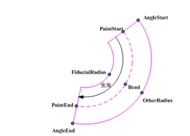
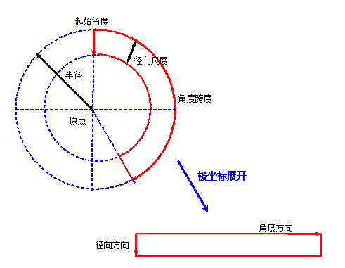
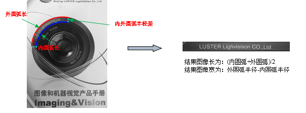
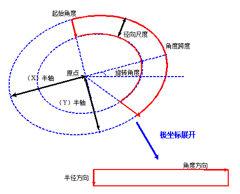
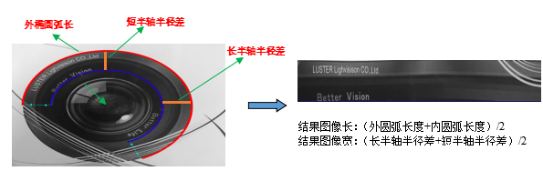

Công cụ triển khai tọa độ cực dùng để chuyển vùng vành khăn tròn hoặc vành khăn elip thành vùng hình chữ nhật, giúp dễ dàng xử lý, phân tích và nhận dạng (thường dùng để “duỗi” chữ/ký hiệu in trên vòng tròn/elip thành hàng thẳng để OCR).
| Phân loại | Tên tham số | Mô tả tham số |
|---|---|---|
| Cửa sổ thuộc tính | Vùng vành khăn | Xác định vùng cần triển khai tọa độ cực. Xem hình 2. |
| Tâm (X/Y) | Tọa độ tâm của vùng vành khăn (hoành độ/tung độ). | |
| Bán kính vòng ngoài | Bán kính lớn nhất của vùng vành khăn. | |
| Góc bắt đầu | Góc khởi đầu của vùng vành khăn, tính theo chiều kim đồng hồ. | |
| Góc quét | Độ lớn góc từ vị trí bắt đầu đến vị trí kết thúc. | |
| Tỷ lệ co giãn hướng kính | Hệ số co giãn theo hướng bán kính của vùng cung. | |
| Có đặt kích thước lấy mẫu không | Có tự đặt chiều dài và chiều rộng của ảnh đầu ra sau khi triển khai không. | |
| Chiều dài lấy mẫu | Chiều dài ảnh đầu ra (tương ứng hướng góc). | |
| Chiều rộng lấy mẫu | Chiều rộng ảnh đầu ra (tương ứng hướng bán kính). | |
| Cửa sổ ảnh | Ảnh đầu vào | Ảnh cần thực hiện triển khai tọa độ cực. |
| Vùng cung tròn GUI | Vùng trên ảnh được chọn để triển khai tọa độ cực. | |
| Chuỗi dữ liệu | Ảnh đầu vào | Ảnh cần thực hiện triển khai tọa độ cực. |
| Biến đổi tuyến tính 2D | Phép co giãn, tịnh tiến, xoay vùng trước khi triển khai (mặc định không thực hiện, có thể bỏ qua). | |
| Giao diện nâng cao | Không có | Không có |
| Phân loại | Tên tham số | Mô tả tham số |
|---|---|---|
| Cửa sổ giám sát | Ảnh đầu vào | Ảnh gốc cần triển khai tọa độ cực. |
| Ảnh đầu ra | Ảnh sau khi đã triển khai tọa độ cực. | |
| Kết quả thực thi | Kết quả thực thi của công cụ. | |
| Thời gian thực thi | Thời gian công cụ thực hiện xử lý. | |
| Cửa sổ ảnh | Ảnh đầu ra | Hiển thị ảnh kết quả sau khi triển khai tọa độ cực. |
| Kết quả thực thi | Thành công hiển thị “OK”, thất bại hiển thị “NG” (giống kết quả ở cửa sổ giám sát). | |
| Chuỗi dữ liệu | Ảnh đầu ra | Ảnh đã triển khai tọa độ cực, dùng làm đầu vào cho các công cụ tiếp theo. |
Các tham số của vùng vành khăn được định nghĩa như hình 2.

Vùng vành khăn tròn được xác định bởi: tâm (X/Y), bán kính vòng ngoài, bán kính vòng trong (nếu có), tỷ lệ hướng kính, góc bắt đầu, góc quét. Góc tính theo chiều kim đồng hồ là dương.
Trong ảnh đầu ra: chiều ngang tương ứng hướng góc, chiều dọc tương ứng hướng bán kính (xem hình 3).

Kích thước mặc định của ảnh đầu ra được tính như sau (hình 4):
– Chiều dài (hướng góc): số điểm lấy mẫu bằng trung bình độ dài cung vòng ngoài và vòng trong.
– Chiều rộng (hướng kính): số điểm lấy mẫu bằng hiệu bán kính ngoài và bán kính trong.

Vùng vành khăn elip được xác định thêm các tham số: bán kính trục X, bán kính trục Y, góc xoay elip. Các tham số còn lại (tỷ lệ hướng kính, góc bắt đầu, góc quét) có ý nghĩa và hướng giống vùng tròn.

Kích thước mặc định của ảnh đầu ra (hình 6):
– Chiều dài (hướng góc): trung bình độ dài cung elip ngoài và elip trong.
– Chiều rộng (hướng kính): trung bình hiệu bán kính trục ngắn và trục dài.

Không có
参见“\Samples\极坐标展开工具.gvp”。